k-means#
Dénomination française : algorithme des centres mobiles.
Principe#
Les centres mobiles ou nuées dynamiques sont un algorithme de classification non supervisée. A partir d’un ensemble de points, il détermine pour un nombre de classes fixé, une répartition des points qui minimise un critère appelé inertie ou variance intra-classe.
Algorithme A1 : centre mobile, k-means
On considère un ensemble de points :
A chaque point est associée une classe :
 .
On définit les barycentres des classes :
.
.
On définit les barycentres des classes :
.
Initialisation
L’initialisation consiste à choisir pour chaque point une classe aléatoirement dans
. On pose  .
.
Calcul des barycentres


Calcul de l’inertie
 et
et 
Attribution des classes
 et
et 
Retour à l’étape du calcul des barycentres jusqu’à convergence de l’inertie  .
.
Théorème T1 : convergence des k-means
Quelque soit l’initialisation choisie, la suite  construite par l’algorithme des k-means
converge.
construite par l’algorithme des k-means
converge.
La démonstration du théorème nécessite le lemme suivant.
Lemme L1 : inertie minimum
Soit ,
 points de 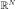, le minimum de la quantité
:
points de 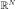, le minimum de la quantité
:

est atteint pour le barycentre des points .
Soit ,
points de .
On peut maintenant démontrer le théorème.
L’étape d’attribution des classes consiste à attribuer à chaque
point le barycentre le plus proche. On définit  par :
par :
On en déduit que :
Le lemme précédent appliqué à chacune des classes ,
permet d’affirmer que .
Par conséquent, la suite est décroissante et minorée par
0, elle est donc convergente.
L’algorithme des centres mobiles cherche à attribuer à chaque
point de l’ensemble une classe parmi les  disponibles.
La solution trouvée dépend de l’initialisation et n’est pas forcément
celle qui minimise l’inertie intra-classe : l’inertie finale est
un minimum local. Néanmoins, elle assure que la partition est formée
de classes convexes : soit
disponibles.
La solution trouvée dépend de l’initialisation et n’est pas forcément
celle qui minimise l’inertie intra-classe : l’inertie finale est
un minimum local. Néanmoins, elle assure que la partition est formée
de classes convexes : soit  et
et  deux classes différentes,
on note
deux classes différentes,
on note  et
et  les enveloppes convexes des points qui
constituent ces deux classes, alors
.
La figure suivante présente un exemple d’utilisation de l’algorithme
des centres mobiles. Des points sont générés aléatoirement
dans le plan et répartis en quatre groupes.
les enveloppes convexes des points qui
constituent ces deux classes, alors
.
La figure suivante présente un exemple d’utilisation de l’algorithme
des centres mobiles. Des points sont générés aléatoirement
dans le plan et répartis en quatre groupes.

C’est une application des centres mobiles avec une classification en quatre classes d’un ensemble aléatoire de points plus dense sur la partie droite du graphe. Les quatre classes ainsi formées sont convexes.
Homogénéité des dimensions#
Les coordonnées des points sont généralement non homogènes : les ordres de grandeurs de chaque dimension sont différents. C’est pourquoi il est conseillé de centrer et normaliser chaque dimension. On note : :
Les points centrés et normalisés sont :

L’algorithme des centres mobiles est appliqué sur l’ensemble
 .
Il est possible ensuite de décorréler les variables ou d’utiliser
une distance dite de Malahanobis définie par
.
Il est possible ensuite de décorréler les variables ou d’utiliser
une distance dite de Malahanobis définie par
 où
où  désigne la transposée de 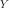 et
désigne la transposée de 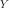 et  est une matrice symétrique définie positive.
Dans le cas de variables corrélées, la matrice
est une matrice symétrique définie positive.
Dans le cas de variables corrélées, la matrice
 où 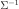 est la matrice
de variance-covariance des variables aléatoires
où 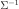 est la matrice
de variance-covariance des variables aléatoires  .
.
Améliorations de l’initialisation#
K-means++#
L’article [Arthur2007] montre que l’initialisation aléatoire n’est pas efficace et est sensible aux outliers ou points aberrants. L’étape d’initialisation est remplacée par la suivante :
Algorithme A2 : initialisation k-means++
Cette étape d’initialisation viendra remplacer celle définie dans l’algorithme k-means. On considère un ensemble de points :
A chaque point est associée une classe :
.
Pour  centres, on choisit
au hasard dans l’ensemble
centres, on choisit
au hasard dans l’ensemble  .
Pour les suivants :
.
Pour les suivants :

On choisit aléatoirement
 avec la probabilité
avec la probabilité
On revient à l’étape 2 jusqu’à ce que
 .
.
La fonction  est définie par la distance du point
est définie par la distance du point  au centre choisi parmi les premiers centres.
.
au centre choisi parmi les premiers centres.
.
La suite de l’algorithme k-means++ reprend les mêmes étapes que k-means.
Cette initilisation éloigne le prochain centre le plus possibles des centres déjà choisis. L’article montre que :
Théorème T2 : Borne supérieure de l’erreur produite par k-means++
On définit l’inertie par
.
Si  définit l’inertie optimale alors
définit l’inertie optimale alors
 .
.
La démonstration est disponible dans l’article [Arthur2007].
K-means||#
L’article [Bahmani2012] propose une autre initialisation que K-means++ mais plus rapide et parallélisable.
Algorithme A3 : initialisation k-means||
Cette étape d’initialisation viendra remplacer celle définie dans l’algorithme k-means. On considère un ensemble de points :
A chaque point est associée une classe :
.
Pour centres, on choisit  au hasard dans l’ensemble .
au hasard dans l’ensemble .
 fois : de probabilité
fois : de probabilité 
La fonction 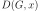 est définie par la distance du point
au plus proche centre :
.
Cette étape ajoute à l’ensemble des centres  un nombre aléatoire de centres à chaque étape.
L’ensemble contiendra plus de centres.
un nombre aléatoire de centres à chaque étape.
L’ensemble contiendra plus de centres.
Pour tout , on assigne le poids
On clusterise l’ensemble des points
en clusters
(avec un k-means classique par exemple)
Au lieu d’ajouter les centres un par un comme dans l’algorithme
k-means++, plusieurs sont ajoutés à chaque fois,
plus  est grand, plus ce nombre est grand. Le tirage d’un échantillon
aléatoire consiste à inclure chaque point avec la probabilité
.
est grand, plus ce nombre est grand. Le tirage d’un échantillon
aléatoire consiste à inclure chaque point avec la probabilité
.
Estimation de probabilités#
A partir de cette classification en classes, on construit un
vecteur de probabilités pour chaque point
en supposant que la loi de sachant sa classe  est une loi
normale multidimensionnelle. La classe de est
notée
est une loi
normale multidimensionnelle. La classe de est
notée  . On peut alors écrire :
. On peut alors écrire :
![\begin{eqnarray*}
\forall i \in \intervalle{1}{C}, \; & & \\
G_i &=& E\pa{X \indicatrice{c_X = i}} = \dfrac{\sum_{k=1}^{P} X_k \indicatrice {c_k = i}} {\sum_{k=1}^{P} \indicatrice {c_k = i}} \\
V_i &=& E\pa{XX' \indicatrice{c_X = i}} = \dfrac{\sum_{k=1}^{P} X_k X_k' \indicatrice {c_k = i}} {\sum_{k=1}^{P} \indicatrice {c_k = i}} \\
\pr{c_X = i} &=& \sum_{k=1}^{P} \indicatrice {c_k = i} \\
f\pa{X | c_X = i} &=& \dfrac{1}{\pa{2\pi}^{\frac{N}{2}} \sqrt{\det \pa{V_i}}} \; e^{ - \frac{1}{2} \pa{X - G_i}' \; V_i^{-1} \; \pa{X - G_i} } \\
f\pa{X} &=& \sum_{k=1}^{P} f\pa{X | c_X = i} \pr{c_X = i}
\end{eqnarray*}](../_images/math/9a5fb39737956619460c225d56792438543f79bb.svg)
On en déduit que :

La densité des obervations est alors modélisée par une mélange de lois normales, chacune centrée au barycentre de chaque classe. Ces probabilités peuvent également être apprises par un réseau de neurones classifieur où servir d’initialisation à un algorithme EM.
Sélection du nombre de classes#
Critère de qualité#
L’algorithme des centres mobiles effectue une classification non supervisée à condition de connaître au préalable le nombre de classes et cette information est rarement disponible. Une alternative consiste à estimer la pertinence des classifications obtenues pour différents nombres de classes, le nombre de classes optimal est celui qui correspond à la classification la plus pertinente. Cette pertinence ne peut être estimée de manière unique, elle dépend des hypothèses faites sur les éléments à classer, notamment sur la forme des classes qui peuvent être convexes ou pas, être modélisées par des lois normales multidimensionnelles, à matrice de covariances diagonales, … Les deux critères qui suivent sont adaptés à l’algorithme des centres mobiles. Le critère de Davies-Bouldin (voir [Davies1979]) est minimum lorsque le nombre de classes est optimal.

Avec :
|
nombre de classes |
|---|---|
écart-type des distances des observations de la classe |
|
|
centre de la classe |


Le critère de Goodman-Kruskal (voir [Goodman1954]) est quant à lui maximum lorsque le nombre de classes est optimal. Il est toutefois plus coûteux à calculer.
Avec :
Où  sont dans la même classe et sont dans des classes différentes.
sont dans la même classe et sont dans des classes différentes.

|

|
Classification en quatre classes : nombre de classes sélectionnées par le critère de Davies-Bouldin dont les valeurs sont illustrées par le graphe apposé à droite.
Maxima de la fonction densité#
L’article [Herbin2001] propose une méthode différente pour estimer
le nombre de classes, il s’agit tout d’abord d’estimer la fonction
densité du nuage de points qui est une fonction de
 . Cette estimation est effectuée au moyen
d’une méthode non paramètrique telle que les estimateurs à noyau
(voir [Silverman1986])
Soit
. Cette estimation est effectuée au moyen
d’une méthode non paramètrique telle que les estimateurs à noyau
(voir [Silverman1986])
Soit  un nuage de points inclus dans une image,
on cherche à estimer la densité au pixel :
un nuage de points inclus dans une image,
on cherche à estimer la densité au pixel :

Où :

 est un paramètre estimée avec la règle de Silverman.
L’exemple utilisé dans cet article est un problème de segmentation
d’image qui ne peut pas être résolu par la méthode des nuées
dynamiques puisque la forme des classes n’est pas convexe,
ainsi que le montre la figure suivante. La fonction de densité
est un paramètre estimée avec la règle de Silverman.
L’exemple utilisé dans cet article est un problème de segmentation
d’image qui ne peut pas être résolu par la méthode des nuées
dynamiques puisque la forme des classes n’est pas convexe,
ainsi que le montre la figure suivante. La fonction de densité
 est seuillée de manière à obtenir une fonction
est seuillée de manière à obtenir une fonction
 définie par :
définie par :

L’ensemble
est composée de  composantes connexes notées
, la classe d’un point
est alors l’indice de la composante connexe à la
laquelle il appartient ou la plus proche le cas échéant.
composantes connexes notées
, la classe d’un point
est alors l’indice de la composante connexe à la
laquelle il appartient ou la plus proche le cas échéant.
| 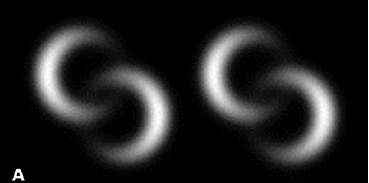 | 
|
Exemple de classification non supervisée appliquée à un problème
de segmentation d’image, la première figure montre la densité obtenue,
la seconde figure illustre la classification obtenue, figure extraite de [Herbin2001].
Cette méthode paraît néanmoins difficilement applicable lorsque la
dimension de l’espace vectoriel atteint de grande valeur. L’exemple de l’image
est pratique, elle est déjà découpée en région représentées par les pixels,
l’ensemble correspond à
l’ensemble des pixels pour lesquels  .
.
Décroissance du nombre de classes#
L’article [Kothari1999] propose une méthode permettant de
faire décroître le nombre de classes afin de choisir le nombre
approprié. L’algorithme des centres mobiles
proposent de faire décroître l’inertie notée  définie pour un ensemble de points noté
définie pour un ensemble de points noté  et
et  classes. La classe d’un élément
est notée . Les centres des classes sont notés
classes. La classe d’un élément
est notée . Les centres des classes sont notés
 .
L’inertie de ce nuage de points est définie par :
.
L’inertie de ce nuage de points est définie par :
On définit tout d’abord une distance
 , puis l’ensemble
,
est donc l’ensemble des voisins des
centres dont la distance avec
, puis l’ensemble
,
est donc l’ensemble des voisins des
centres dont la distance avec  est inférieur à .
L’article [Kothari1999] propose de minimiser le coût
est inférieur à .
L’article [Kothari1999] propose de minimiser le coût  suivant :
suivant :
Lorsque est nul, ce facteur est égal à l’inertie :
 et ce terme est minimal lorsqu’il y a autant de
classes que d’éléments dans . Lorsque
tend vers l’infini, où :
et ce terme est minimal lorsqu’il y a autant de
classes que d’éléments dans . Lorsque
tend vers l’infini, où :

Ici encore, il est possible de montrer que ce terme
 est minimal lorsqu’il n’existe plus qu’une
seule classe. Le principe de cette méthode consiste à faire varier
le paramètre , plus le paramètre augmente,
plus le nombre de classes devra être réduit. Néanmoins, il existe
des intervalles pour lequel ce nombre de classes est stable,
le véritable nombre de classes de l’ensemble
sera considéré comme celui correspondant au plus grand intervalle
stable.
est minimal lorsqu’il n’existe plus qu’une
seule classe. Le principe de cette méthode consiste à faire varier
le paramètre , plus le paramètre augmente,
plus le nombre de classes devra être réduit. Néanmoins, il existe
des intervalles pour lequel ce nombre de classes est stable,
le véritable nombre de classes de l’ensemble
sera considéré comme celui correspondant au plus grand intervalle
stable.
| 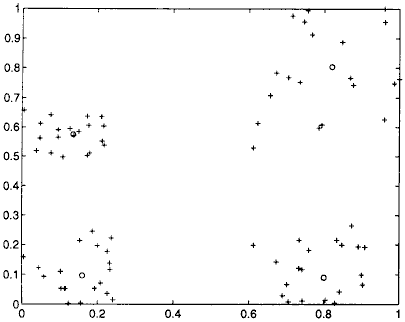 | 
|
(a) |
(b) |
Evolutation du nombre de classes en fonction du paramètre lors de la
minimisation du critère , figure extraite de [Kothari1999].
La première image représente le nuage de points illustrant quatre classes sans recouvrement.
La seconde image montre que quatre classes est l’état le plus longtemps stable
lorsque croît.
Le coût est une somme de coût dont
l’importance de l’un par rapport à l’autre est contrôle
par les paramètres  . Le problème de
minimisation de est résolu par l’algorithme qui suit.
Il s’appuie sur la méthode des multiplicateurs de Lagrange.
. Le problème de
minimisation de est résolu par l’algorithme qui suit.
Il s’appuie sur la méthode des multiplicateurs de Lagrange.
Algorithme A4 : sélection du nombre de classes
(voir [Kothari1999])
Les notations sont celles utilisés dans les paragraphes précédents. On suppose que le
paramètre évolue dans l’intervalle  à intervalle régulier .
Le nombre initial de classes est noté et il est supposé surestimer le véritable
nombre de classes. Soit
à intervalle régulier .
Le nombre initial de classes est noté et il est supposé surestimer le véritable
nombre de classes. Soit ![\eta \in \left]0,1\right[](../_images/math/0af93cb0b8d164e9534df19c3e33895aca887fe8.svg) ,
ce paramètre doit être choisi de telle sorte que dans
l’algorithme qui suit, l’évolution des centres
soit autant assurée par le premier de la fonction de coût que par le second.
,
ce paramètre doit être choisi de telle sorte que dans
l’algorithme qui suit, l’évolution des centres
soit autant assurée par le premier de la fonction de coût que par le second.
initialisation

On tire aléatoirement les centres des classes .
préparation
On définit les deux suites entières  , ,
et les deux suites de vecteur ,
, ,
et les deux suites de vecteur ,
 .
.

calcul des mises à jour
 .
.


convergence
Tant que l’étape précédente n’a pas convergé vers une version stable des centres,
, retour à l’étape précédente. Sinon, tous les couples de classes  vérifiant sont fusionnés :
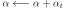.
Si
vérifiant sont fusionnés :
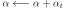.
Si  , retour à l’étape de préparation.
, retour à l’étape de préparation.
terminaison
Le nombre de classes est celui ayant prévalu pour le plus grand nombre de valeur de .
Extension des nuées dynamiques#
Classes elliptiques#
La version de l’algorithme des nuées dynamique proposée dans l’article [Cheung2003] suppose que les classes ne sont plus de forme circulaire mais suivent une loi normale quelconque. La loi de l’échantillon constituant le nuage de points est de la forme :

Avec . On définit :
L’algorithme qui suit a pour objectif de minimiser la quantité pour un échantillon  :
:

Algorithme A5 : nuées dynamiques généralisées
Les notations sont celles utilisées dans ce paragraphe. Soient  ,
deux réels tels que
,
deux réels tels que  .
La règle préconisée par l’article [Cheung2003] est .
.
La règle préconisée par l’article [Cheung2003] est .
initialisation
 .
Les paramètres sont initialisés
grâce à un algorithme des k-means ou FSCL.
.
Les paramètres sont initialisés
grâce à un algorithme des k-means ou FSCL.
 et
et  .
.
récurrence
Soit choisi aléatoirement dans .


terminaison
Tant que  change pour au moins un des points .
change pour au moins un des points .
Lors de la mise à jour de ,
l’algorithme précédent propose la mise à jour de  alors que le calcul de
implique ,
par conséquent, il est préférable de mettre à jour directement la matrice
:
alors que le calcul de
implique ,
par conséquent, il est préférable de mettre à jour directement la matrice
:
Rival Penalized Competitive Learning (RPCL)#
L’algorithme suivant développé dans [Xu1993], est une variante de celui des centres mobiles. Il entreprend à la fois la classification et la sélection du nombre optimal de classes à condition qu’il soit inférieur à une valeur maximale à déterminer au départ de l’algorithme. Un mécanisme permet d’éloigner les centres des classes peu pertinentes de sorte qu’aucun point ne leur sera affecté.
Algorithme A6 : RPCL
Soient , vecteurs à classer en au
plus classes de centres  .
Soient deux réels et 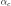
tels que .
.
Soient deux réels et 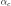
tels que .
initialisation
Tirer aléatoirement les centres .

calcul de poids
Choisir aléatoirement un point .


mise à jour

terminaison
S’il existe un indice  pour lequel
pour lequel  alors retourner à l’étape de calcul de poids ou que les centres des classes jugées inutiles
ont été repoussés vers l’infini.
alors retourner à l’étape de calcul de poids ou que les centres des classes jugées inutiles
ont été repoussés vers l’infini.
Pour chaque point, le centre de la classe la plus proche en est rapproché
tandis que le centre de la seconde classe la plus proche en est éloigné
mais d’une façon moins importante (condition  ).
Après convergence, les centres des classes inutiles ou non pertinentes
seront repoussés vers l’infini. Par conséquent, aucun point n’y sera rattaché.
).
Après convergence, les centres des classes inutiles ou non pertinentes
seront repoussés vers l’infini. Par conséquent, aucun point n’y sera rattaché.
L’algorithme doit être lancé plusieurs fois. L’algorithme RPCL peut terminer sur un résultat comme celui de la figure suivante où un centre reste coincé entre plusieurs autres. Ce problème est moins important lorsque la dimension de l’espace est plus grande.

Application de l’algorithme RPCL : la classe 0 est incrusté entre les quatre autres et son centre ne peut se « faufiler » vers l’infini.
RPCL-based local PCA#
L’article [Liu2003] propose une extension de l’algorithme RPCL et suppose que les classes ne sont plus de forme circulaire mais suivent une loi normale quelconque. Cette méthode est utilisée pour la détection de ligne considérées ici comme des lois normales dégénérées en deux dimensions, la matrice de covariance définit une ellipse dont le grand axe est très supérieur au petit axe, ce que montre la figure suivante. Cette méthode est aussi présentée comme un possible algorithme de squelettisation.

Figure extraite de [Liu2003], l’algorithme est utilisé pour la détection de lignes considérées ici comme des lois normales dont la matrice de covariance définit une ellipse dégénérée dont le petit axe est très inférieur au grand axe. Les traits fin grisés correspondent aux classes isolées par l’algorithme RPCL-based local PCA.
On modélise le nuage de points par une mélange de lois normales :
Avec .
On suppose que le nombre de classes initiales surestime le
véritable nombre de classes. L’article [Liu2003] s’intéresse
au cas particulier où les matrices de covariances vérifient
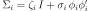
avec  .
.
On définit également :

L’algorithme utilisé est similaire à l’algortihme RPCL.
La distance  utilisée lors de l’étape de calcul des poids
afin de trouver la classe la plus probable pour un point
donné est remplacée par l’expression :
utilisée lors de l’étape de calcul des poids
afin de trouver la classe la plus probable pour un point
donné est remplacée par l’expression :
L’étape de mise à jour des coefficients est remplacée par :
Où  joue le rôle d’un paramètre et est remplacé
successivement par ,
joue le rôle d’un paramètre et est remplacé
successivement par ,  ,
,  , ,
, ,  :
:
![\begin{array}{lll}
\nabla p_i^t &=& - \frac{1}{p_i^t} \\
\nabla \mu_i^t &=& - \pa{ X_k - \mu_i^t} \\
\nabla \zeta_i^t &=& \frac{1}{2} \; tr\cro{ \pa{\Sigma_i^t}^{-1} \,
\pa{ I - \pa{ X_k - \mu_i^t} \pa{ X_k - \mu_i^t}' \pa{\Sigma_i^t}^{-1} } } \\
\nabla \sigma_i^t &=& \frac{1}{2} \; \pa{\phi_i^t}' \pa{\Sigma_i^t}^{-1}
\pa{ I - \pa{ X_k - \mu_i^t} \pa{ X_k - \mu_i^t}' \pa{\Sigma_i^t}^{-1} } \phi_i^t \\
\nabla \phi_i^t &=& \sigma_i^t \pa{\Sigma_i^t}^{-1}
\pa{ I - \pa{ X_k - \mu_i^t} \pa{ X_k - \mu_i^t}' \pa{\Sigma_i^t}^{-1} } \phi_i^t \\
\end{array}](../_images/math/bb1785385e15b2920550c06d3826dba61d478d70.svg)
Frequency Sensitive Competitive Learning (FSCL)#
L’algorithme Frequency Sensitive Competitive Learning est présenté dans [Balakrishnan1996]. Par rapport à l’algorithme des centres mobiles classique, lors de l’estimation des centres des classes, l’algorithme évite la formation de classes sous-représentées.
Algorithme A7 : FSCL
Soit un nuage de points ,
soit vecteurs
initialisés de manière aléatoires.
Soit  croissante par rapport à
croissante par rapport à  .
Soit une suite de réels ,
soit une suite
.
Soit une suite de réels ,
soit une suite  décroissante où
décroissante où  représente le nombre d’itérations.
Au début .
représente le nombre d’itérations.
Au début .
meilleur candidat
Pour un vecteur choisi aléatoirement dans
l’ensemble , on détermine :
mise à jour


Retour à l’étape précédente jusqu’à ce que les nombres
 convergent.
convergent.
Exemple de fonctions pour  ,
,  (voir [Balakrishnan1996]) :
(voir [Balakrishnan1996]) :
Cet algorithme ressemble à celui des cartes topographiques de Kohonen
sans toutefois utiliser un maillage entre les neurones
(ici les vecteurs 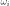). Contrairement à l’algorithme RPCL,
les neurones ne sont pas repoussés s’ils ne sont pas choisis mais la fonction
croissante  par rapport à assure que plus un neurone
est sélectionné, moins il a de chance de l’être,
bien que cet avantage disparaisse au fur et à mesure des itérations.
par rapport à assure que plus un neurone
est sélectionné, moins il a de chance de l’être,
bien que cet avantage disparaisse au fur et à mesure des itérations.
k-means norme L1#
L’algorithme dans sa version la plus courante optimise l’inertie définie par , qui est en quelque sorte une inertie L2. Que devriendrait l’algorithme si la norme choisie était une norme L1, il faudrait alors choisir à chaque itération t des points qui minimise la quantité : où est la norme L1 entre deux points X,Y : . Avant de continuer, on rappelle un théorème :
propriété P1 : Médiane et valeur absolue
Soit  un ensembl de n réels quelconque.
On note
un ensembl de n réels quelconque.
On note  la médiane
de l’ensemble de points A. Alors la médiane m
minimise la quantité .
la médiane
de l’ensemble de points A. Alors la médiane m
minimise la quantité .
C’est cette propriété qui est utilisée pour définir ce qu’est
la régression quantile et sa démonstration
est présentée à la page Médiane et valeur absolue. Il ne reste
plus qu’à se servir de ce résultat pour mettre à jour l’algorithme
centre mobile, k-means. L’étape qui
consiste à affecter un point à un cluster représenté par un point
ne pose pas de problème si on utilise cette nouvelle norme. Il ne reste
plus qu’à déterminer le point qui représente un cluster sachant
les points qui le constituent. Autrement dit, il faut déterminer
le point qui minimiser la pseudo-inertie définie comme suit
pour un ensemble de points  appartenant à un
espace vectoriel de dimension k.
appartenant à un
espace vectoriel de dimension k.
On cherche le point G qui minimise la quantité .
Comme ,
on en déduit qu’on peut chercher la coordonnée  indépendemment
les unes des autres. On en déduit
que le barycentre de norme L1 d’un ensemble de points dans un
espace vectoriel de dimension d a pour coordonnées les d
médianes extraites sur chacune des dimensions.
L’algorithme est implémenté dans le module mlinsights
en s’inspirant du code KMeans.
indépendemment
les unes des autres. On en déduit
que le barycentre de norme L1 d’un ensemble de points dans un
espace vectoriel de dimension d a pour coordonnées les d
médianes extraites sur chacune des dimensions.
L’algorithme est implémenté dans le module mlinsights
en s’inspirant du code KMeans.
Bibliographie#
k-means++: the advantages of careful seeding (2007), Arthur, D.; Vassilvitskii, S., Proceedings of the eighteenth annual ACM-SIAM symposium on Discrete algorithms. Society for Industrial and Applied Mathematics Philadelphia, PA, USA. pp. 1027–1035. 2006-13.pdf.
Comparative performance of the FSCL neural net and K-means algorithm for market segmentation (1996), P. V. Sundar Balakrishnan, Martha Cooper, Varghese S. Jacob, Phillip A. Lewis, European Journal of Operation Research, volume 93, pages 346-357
Scalable K-Means++ (2012), Bahman Bahmani, Benjamin Moseley, Andrea Vattani, Ravi Kumar, Sergei Vassilvitskii, Proceedings of the VLDB Endowment (PVLDB), Vol. 5, No. 7, pp. 622-633 (2012) vldb12-kmpar.pdf, arXiv.1203.6402
 -Means: A new generalized k-means clustering algorithm (2003),
Yiu-Ming Cheung,
Pattern Recognition Letters, volume 24, 2883-2893
-Means: A new generalized k-means clustering algorithm (2003),
Yiu-Ming Cheung,
Pattern Recognition Letters, volume 24, 2883-2893
A cluster Separation Measure (1979), D. L. Davies, D. W. Bouldin, IEEE Trans. Pattern Analysis and Machine Intelligence (PAMI), volume 1(2)
Measures of associations for cross-validations (1954), L. Goodman, W. Kruskal, J. Am. Stat. Assoc., volume 49, pages 732-764
Estimation of the number of clusters and influence zones (2001), M. Herbin, N. Bonnet, P. Vautrot, Pattern Recognition Letters, volume 22, pages 1557-1568
On finding the number of clusters (1999), Ravi Kothari, Dax Pitts, Pattern Recognition Letters, volume 20, pages 405-416
Strip line detection and thinning by RPCL-based local PCA (2003), Zhi-Yong Liu, Kai-Chun Chiu, Lei Xu, Pattern Recognition Letters volume 24, pages 2335-2344
Density Estimation for Statistics and Data Analysis (1986), B. W. Silverman, Monographs on Statistics and Applied Probability, Chapman and Hall, London, volume 26
Rival penalized competitive learning for clustering analysis, rbf net and curve detection (1993), L. Xu, A. Krzyzak, E. Oja, IEEE Trans. Neural Networks, volume (4), pages 636-649